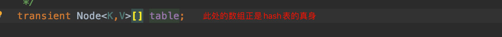
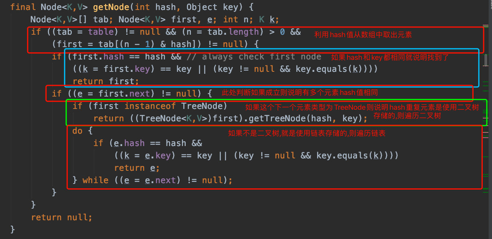
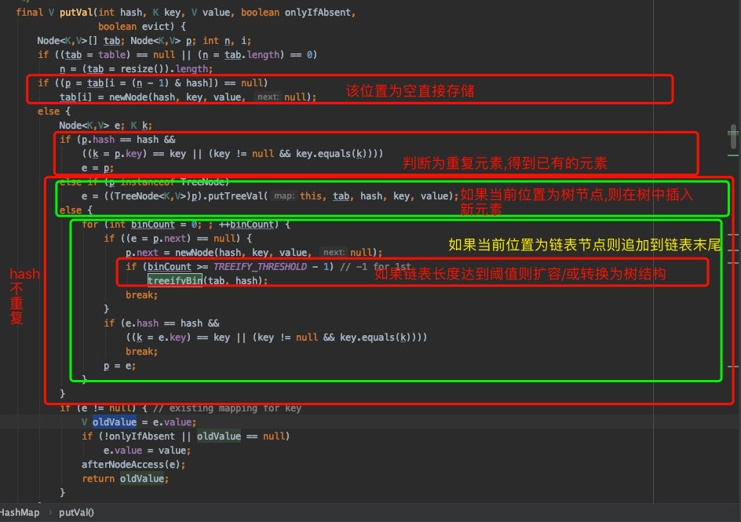
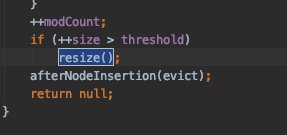
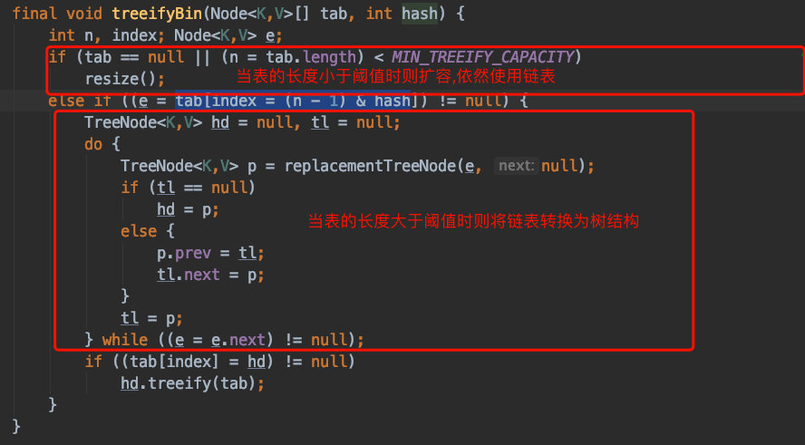

HashMap 数据结构解析:
HashMap内部使用hash表(本质是一个数组见图一)
HashMap使用hash算法计算得到存放的索引位置,以此来加快查询速度,(比ArrayList还要快)
hash值相同不能表示key完全相同,需要调用equals再次确认
如果key的hash值相同但是equals判断不相同,那么使用树结构或者链表来存储这些hash相同的元素,(具体使用哪种根据当前map中元素的数量,超过64个元素则使用树结构)



代码在putVal方法的最后,当添加元素后的表的长度超过阈值时则直接扩容hash表


总结:
HashMap是使用Hash表(本质是数组)来存储数据,
当key的Hash值相同但是equals判断不同时使用链表(添加快,查询慢)
当元素数量超过64时则将链表转为树结构(添加慢,查询快)